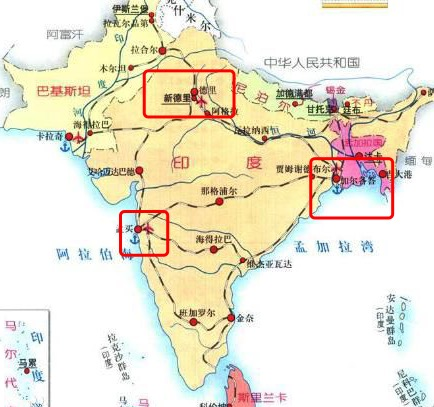
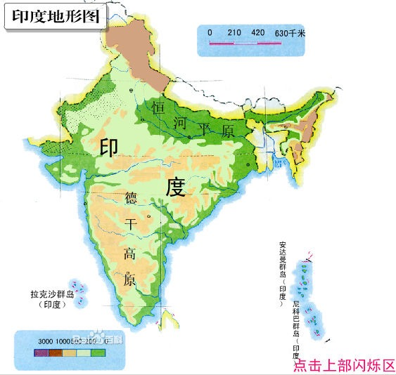
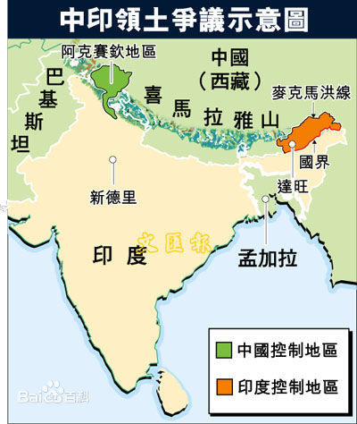

历史的地理枢纽 总结
摘抄
大量的地理分布必然丧失它的重要性，而成功的列强将是掌握最大工业基础的那些国家。
在大陆中心还是在岛屿上这个问题并不重要，哪个民族拥有工业的力量，发明的力量，科学的力量，它就能打败其他所有的民族。
地理学的范围和方法
它的主要职能是探索人类在社会中的相互作用，以及在局部发生变化的环境中的相互作用。
自然地理学常常由那些已经有沉重负担的地质学承担着，而政治地理学则被那些已有负担的历史学在承担。
知识归根到底是一个整体，但是当今的极端专门化却似乎使某类聪明才智之士无法知道实际。
最大的隔阂来自自然与人类研究之间。地理学家的责任是建立一座桥梁，以便跨越那条许多人认为是正在搅乱我们文化平衡的鸿沟。
两门科学可能有部分一致的数据，在结果上不应有争吵，因为数据虽然相同，但对待数据的观点是不同的。
地质学和地理学的真正差别在于：地质学者观察现在以便解释过去，而地理学家观察过去以便解释现在。
真正自然地理学的目标在于为我们作出一个关于地球表面特征分布的因果描述。
气象学的内容这么多，它充分地论述了天气；天气预报不是地理学家所需要的。只有平均的和周期性出现的气候才在地理学家的知识范围之内。
实际情况是所有科学的界限，必然是天然地折中的。正如我们以前说过的，知识是统一的整体，它的分化成各个学科是对人类软弱的一种让步。
任何地方的政治问题，都将以对自然特征考察的结果而定；对于人口稠密的集团，需要一定的气候和土壤条件。一定的人口密度，对于文明的发展似乎是必须的。
相对地未经扰动的地层通常构成广阔平原的基础，而广阔的平原似乎特别有利于均一种族（如俄国人和中国人）的发展。
研究人对自然的反作用，将是地理学中最迷人的篇章之一。人类改变他们的环境，结果是环境对人类后代的作用发生变化。
人工照明条件的改进，已经使圣彼得堡的一个巨大社会有可能生存下去；通向印度的好望角航线和新大陆的发现，导致威尼斯城的衰落。蒸汽机和电报的发明，使现代的国家可能拥有巨大的面积。
一个特定时刻的历史进程，不论是政治、社会或人类活动的其他方面的，不仅是环境，而且也是以前所取得的动量的产物。必须承认人主要是习惯的奴隶这一事实。
…这就具备了发展文明的两个有利条件：人口稠密和交通方便。
历史的地理枢纽
哥伦布时代的基本特征是欧洲几乎是在没有抵抗的情况下进行扩张，而中世纪的基督教世界则被圈在一个狭窄的地区内，并受到外部的野蛮世界的威胁。从现在开始，即在哥伦布以后的时代，我们不得不再一次与封闭的政治制度打交道，而且这将仍然是一个世界范围内的问题。
起主动作用的是人类而不是自然，但是自然在很大程度上占支配地位。
形成与仅仅是一群有人性的动物相对立的一个国家的各种概念，通常是在共同苦难的压力和抵抗外来力量的共同需要下才被接受的。
正是在外来野蛮人的压力下，欧洲才实现它的文明。
在非常真实的意义上说，欧洲文明是反对亚洲人入侵的长期斗争的成果。
近代史的一大部分，可以看成是对这些袭击所直接或间接引起的变化的注释。盎格鲁-撒克逊人很可能是在那时被驱赶过海，在不列颠岛上建立英格兰的。法兰克人、哥特人和罗马帝国各省的居民被迫第一次在夏龙战场并肩战斗，进行反对亚洲人的共同事业；他们不自觉地结合成近代的法国。甚至教皇统治的决定性威望，也得自教皇利奥与阿提拉在米兰的调停成功。
在一千年内，一系列从亚洲兴起的骑马民族，穿过乌拉尔山和里海之间的宽广空隙，踏过俄罗斯南部开阔的原野，取得了欧洲半岛的中心匈牙利；由于反对他们这一需要，于是形成了周围的每一个伟大民族–俄罗斯人、日耳曼人、法兰西人、意大利人和拜占庭希腊人的历史。
欧洲的定居民族就被夹在两种压力之间–从东方来的亚洲游牧民族和另外三个方面从海上来的海盗。
显然，由于雨水来源于海洋，最大陆块的中央部分可能相对干燥些。所以，我们就不会对发现这点感到惊异：全世界三分之二的人口集中在这块最大的大陆边缘比较小的各个地区内–在欧洲是大西洋的旁边，在印度和中国是印度洋和太平洋沿岸。
实际上，欧洲的南界过去和现在都是撒哈拉，而不是地中海；因为正是沙漠才把黑人与白人分开的。
旧大陆所有定居的边缘地带，或先或后地都感觉到来自草原的机动力量的扩张势力。
根据自然形态，它们可分为四个区域，而且不是不值得注意的，是它们，一般的说分别与四大宗教–佛教、婆罗门教、伊斯兰教和基督教的领域相一致。
由哥伦布一代的伟大航海家开始的变革，赋予基督教世界以最广大的除飞翔以外的活动能力。
在中世纪时，欧洲被关在南面不可逾越的沙漠、西面无边莫测的大洋，和北面、东北面冰或森林覆盖的荒原之间，而东面和东南面又经常受到骑马和骑骆驼民族的优势机动性的威胁。
在某种意义上说，欧洲的向海和向陆的扩张，应该认为是古代罗马和希腊之间对抗的继续。在造成意义深远的这一点上，几乎没有哪些重大的失败能比得上罗马在使希腊人拉丁化上的失败了。条顿族得到罗马人的文明化和基督教化，而斯拉夫族则主要受惠于希腊人。后来乘船下海的是罗马-条顿人，而践踏草原、征服图兰人的则是希腊-斯拉夫人。
欧亚大陆上那一片广大的、船舶不能到达、但在古代却任凭骑马牧民纵横驰骋，而今天又即将布满铁路的地区，不是世界政治的一个枢纽区域吗？
某一新的力量代替俄国对这片内陆地区的控制，将不会降低这一枢纽位置的意义。
总结
这本书由两篇讲稿组成。第一篇讲稿是在地理学还没确立这门学科的时候，麦金德对学会中的人做的描述。即地理要研究什么呢？答案是清楚的，“主要职能是探索人类在社会中的相互作用，以及在局部发生变化的环境中的相互作用。”，“地质学者观察现在以便解释过去，而地理学家观察过去以便解释现在”。它牵涉着地质学、气象学、历史学等学科，用来根据这些更专注其专项领域的学科，来解释人类社会中的现象与地理、气候等自然因素之间的关系。而用于解释政治这一社会学中的基本领域的时候，自然就是“地缘政治”范畴了。
在读这篇文章的时候，顺便根据里面的引例查了一下印度，也是很有趣。印度的三大城市：首都新德里，最大城市孟买，原英属印度首都加尔各答。

印度两面环海，东北是喜马拉雅山，西北是沙漠；所以在大航海之前，印度的主要外部威胁都来自于北方的一条狭长的走廊，而德里就在这条走廊的终点处。征服者总是以德里作为征服印度的起点。而孟买作为葡萄牙最早占据的殖民点，由于被狭长的山脉所阻隔，所以一直也没有发展出大片的殖民地；而英国人通过加尔各答，沿着恒河通过印度最肥沃的恒河平原，到达上游的首都德里。这也是这三个大城市的由来，以及为什么英国能殖民印度而葡萄牙却好像什么都没做。

在来看看中印领土争议地图：

可以看到当年为什么毛主席放弃自然条件优越的藏南而一定要拿住气候恶劣的阿克赛钦，因为这个地方简直就是一把刀悬在印度的头上：只要从西藏或者新疆出兵，从阿克赛钦直接可以威胁到新德里以及整个恒河平原。如果类比的话，这个地方跟当年的朝鲜是很相似的：假如美国占领了朝鲜，那么对于当时的重工业基地以及产量基地东北是多么大的威慑，而从朝鲜到北京跟阿克赛钦到新德里的距离也差不多。
第二篇则论述了欧洲历史与地理之间的关系。在大航海前，欧洲一直被外来力量所压缩，特别是游牧民族的入侵。为了抵抗外部压力，逐渐形成了今天我们所熟知的民族国家。大航海后，欧洲终于突破了地理的限制，几乎没受什么抵抗的就占领了全世界，似乎谁控制了海洋，谁就控制了世界。但是麦金德认为，这片世界上最大的大陆依然会是整个世界的核心，因此谁控制了中心那片舰船到不了的区域，谁就能再次夺回主动，制衡海权。这与我国当今的“一带一路”策略不谋而合。